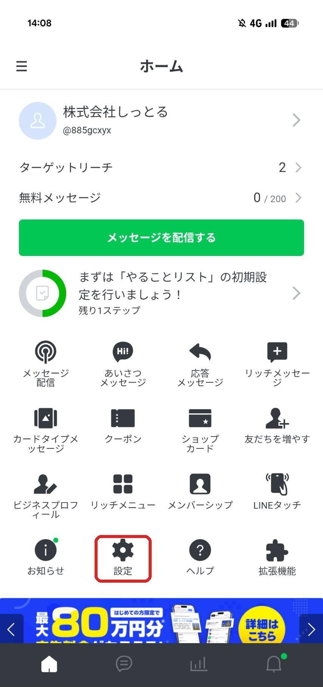
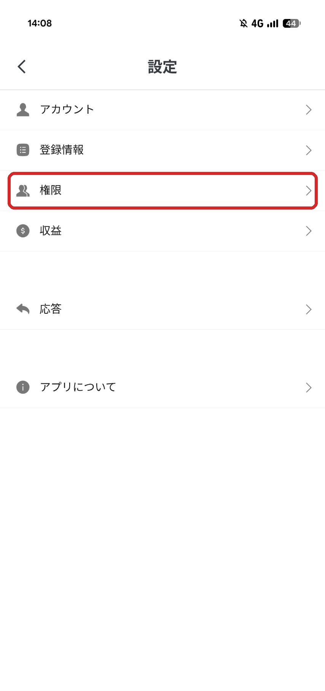
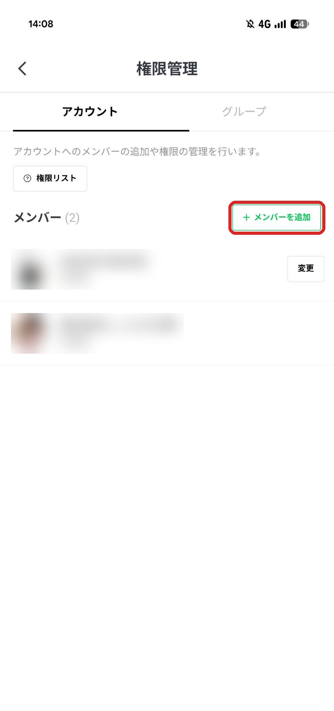
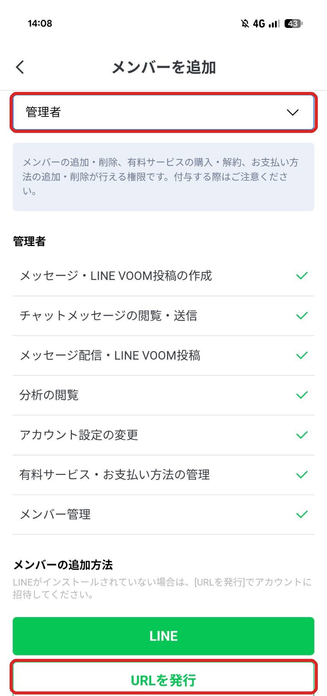

公式LINEの管理画面に、別の方（当社やスタッフの方）を招待するときの手順です。招待のURLを作って、相手に送るだけで終わります。
画面の赤い枠のところを順に押してください。
印刷用のPDFはこちら
| 当社を招待するとき | 管理者を選んでください |
| 返信をお願いするスタッフの方 | 運用担当者（配信権限なし）がおすすめです。返信はできますが、お知らせの配信はできません |
| 配信もお願いするスタッフの方 | 運用担当者（お支払いとメンバーの管理以外はすべてできます） |
アプリを開き、お店のアカウントを選びます。ホーム画面のボタンが並んでいるところにある「設定」（歯車のマーク）を押します。

設定の一覧から「権限」を押します。

「権限管理」の画面が開きます。今メンバーになっている方の一覧の右上にある「＋メンバーを追加」を押します。
このボタンが出ないときは、お使いのLINEが管理者になっていません。下の「うまくいかないとき」をご覧ください。

一番上の欄を押して、権限を選びます。当社を招待するときは「管理者」です。
選んだら、画面の下の「URLを発行」を押します。
緑の「LINE」ボタンは、ご自分のLINEの友だちに直接送る方法です。当社へは「URLを発行」からお送りください。

招待のURLが出たら「URLをコピー」を押し、当社（またはスタッフの方）とのLINEのトークに貼り付けて送ってください。
受け取った側がURLを開いて参加すると、「権限管理」のメンバーに名前が出ます。これで完了です。